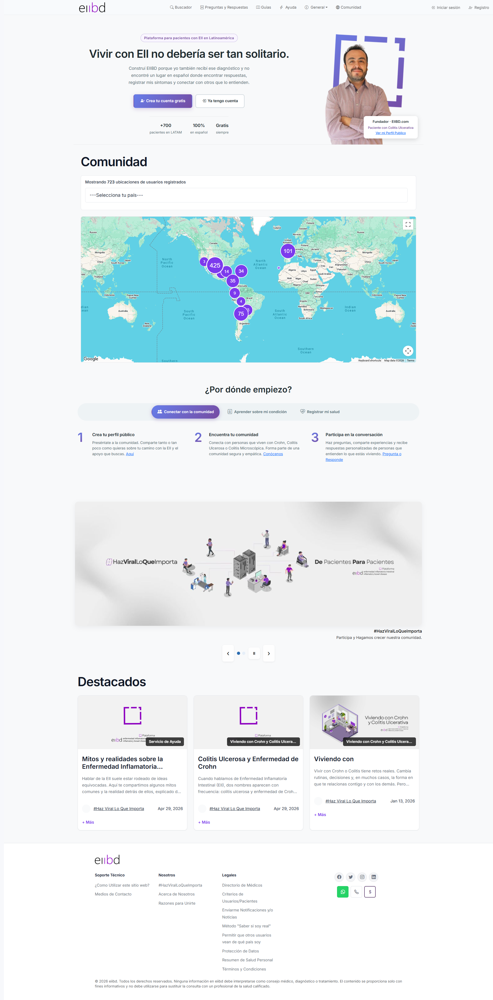
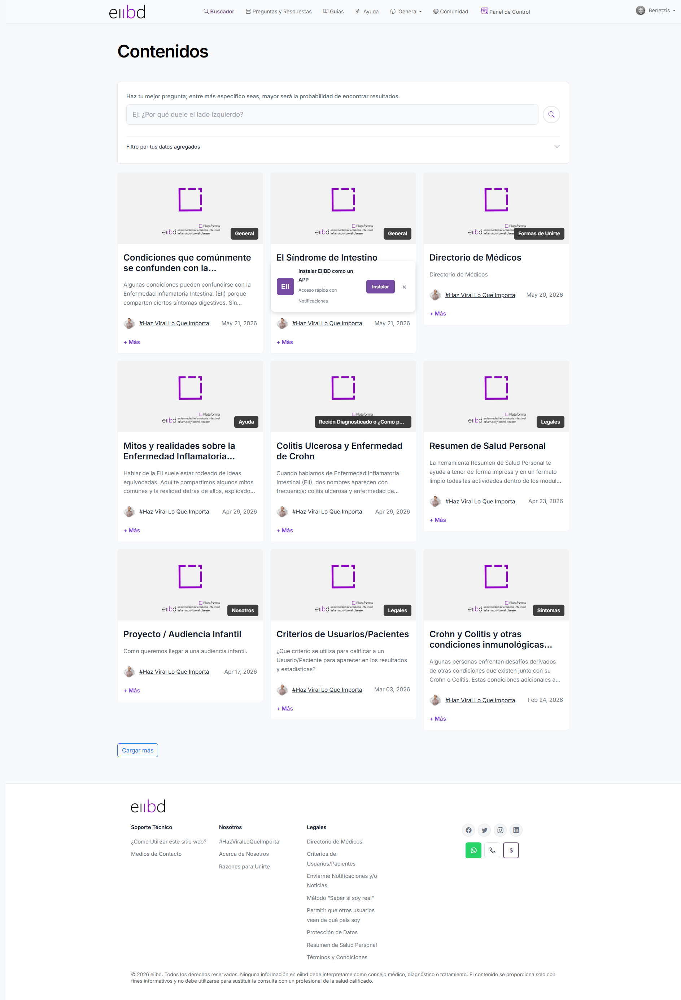
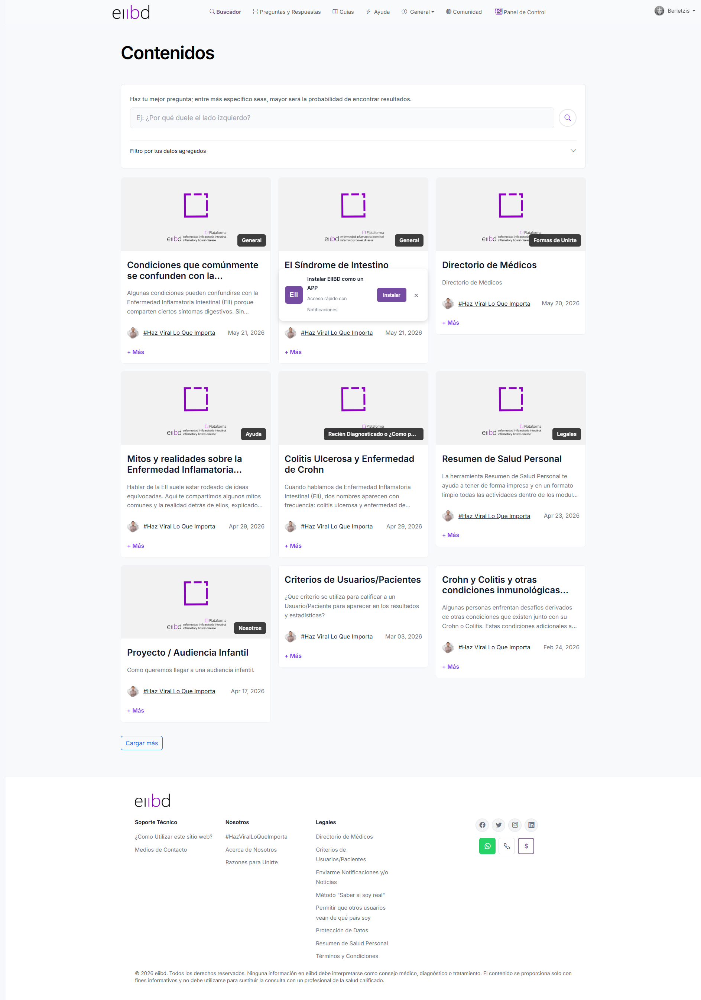
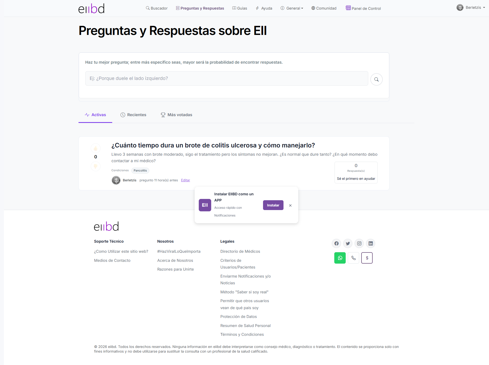
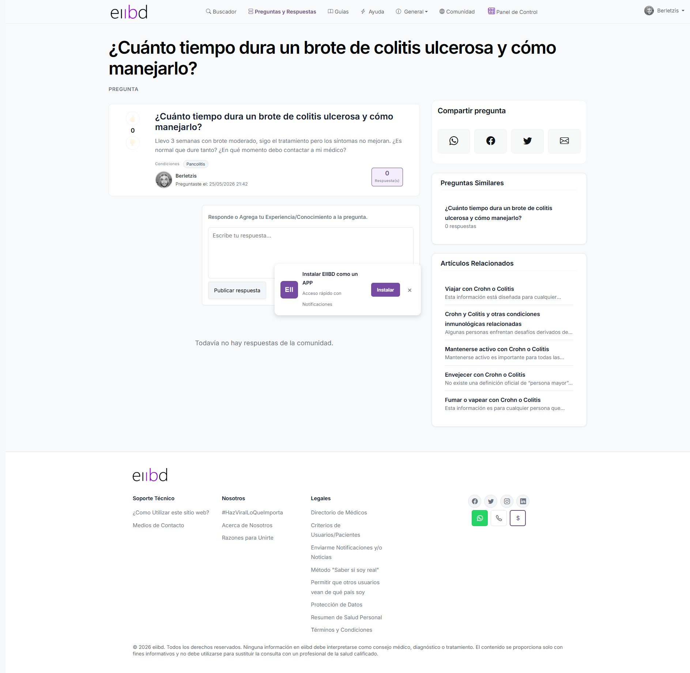
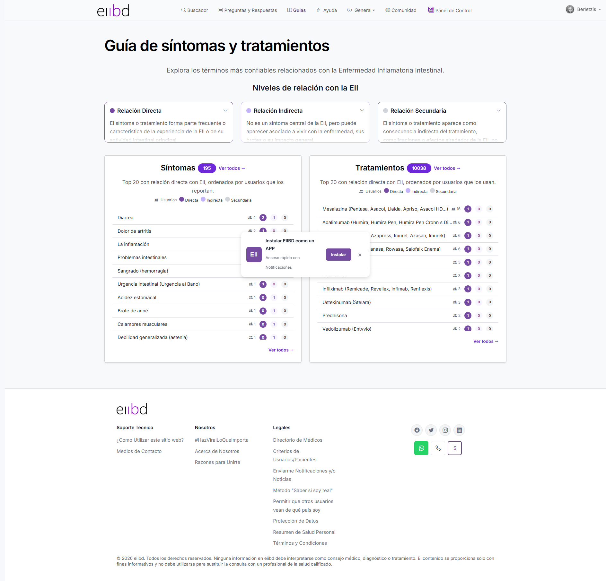
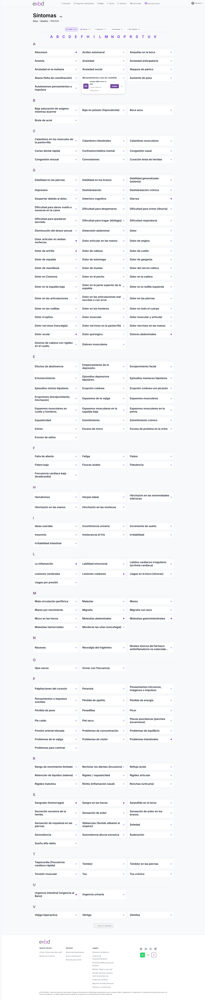
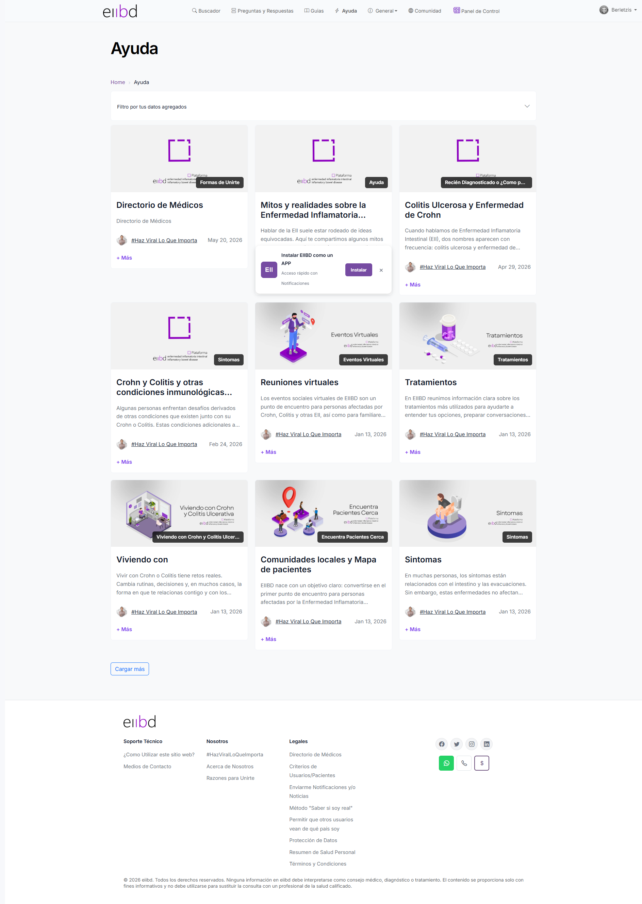
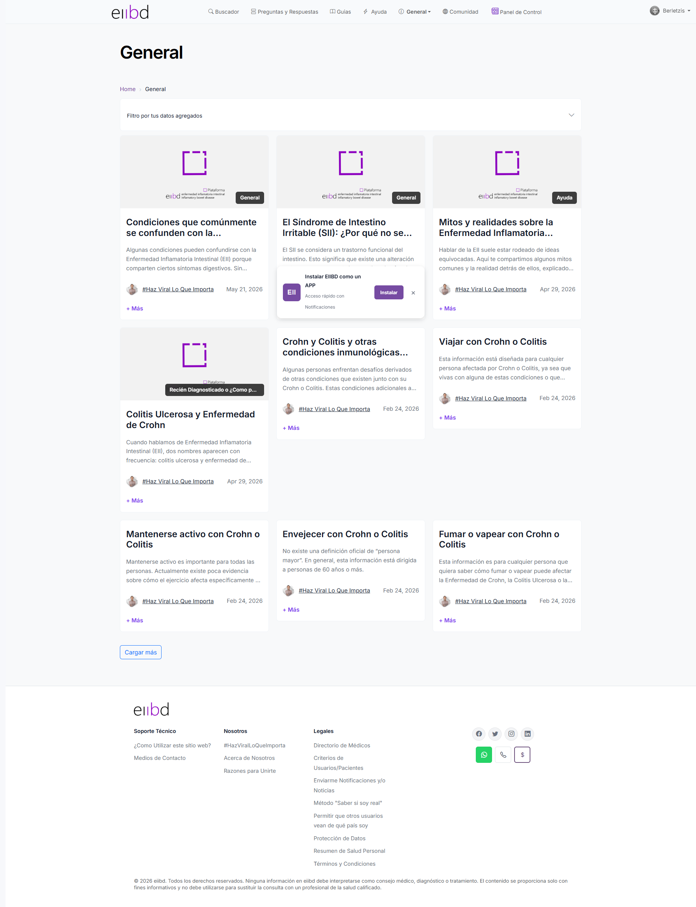
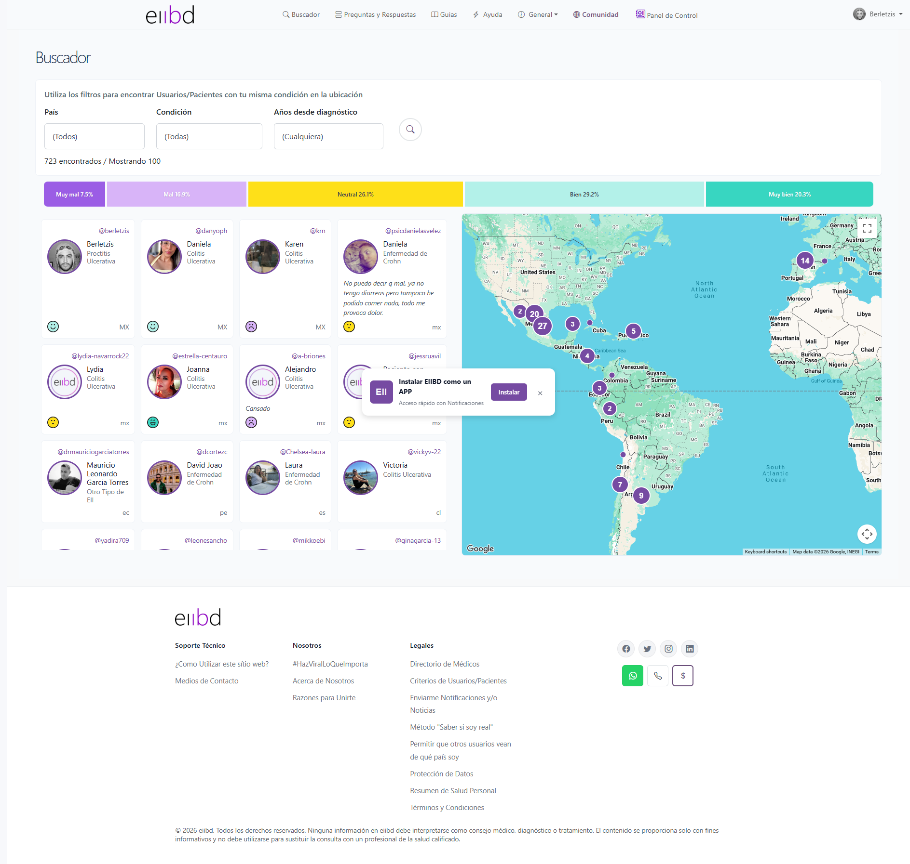

| Criterio | Observación | Estado |
|---|---|---|
| Comprensión inmediata | El H1 "Vivir con EII no debería ser tan solitario" comunica el propósito en 2 segundos | OK |
| CTA principal | "Crea tu cuenta gratis" + "Ya tengo cuenta" bien posicionados, pero el botón primario usa Bootstrap blue (#0d6efd), no el brand color (#6a4e7a). Desconexión visual con el resto del sitio | WARN |
| Jerarquía visual | Hero → Mapa → ¿Por dónde empiezo? → Banners → Destacados. Flujo lógico pero el mapa ocupa demasiado espacio vertical antes de las acciones clave | WARN |
| Carga cognitiva | Demasiados módulos en una sola página (hero, mapa, tabs, slider, 3 artículos, footer). Abrumador en primera visita | CRIT |
| Consistencia | El mapa aparece tanto en /Home como en /Mapa con UI diferente. Duplicación innecesaria | WARN |
| Estadísticas "+700 pacientes" | Dato desactualizado (la BD tiene 723 según el mapa). Inconsistencia texto vs. dato real | WARN |
| Scroll | Página extremadamente larga. El CTA de registro queda fuera de viewport en 80% de visitas sin scroll | CRIT |
| Legibilidad párrafos | Texto del hero en color rgba(33,37,41,0.75) — contraste aceptable pero no óptimo sobre fondo claro | WARN |


| Criterio | Observación | Estado |
|---|---|---|
| Placeholder | "Ej: ¿Por qué duele el lado izquierdo?" — excelente, contextual y orientador | OK |
| Estado vacío (sin resultados) | Búsqueda "Mesalazina" devuelve 9 artículos que no tienen relación. El sistema no muestra "sin resultados" — hace fallback al listado completo sin avisar al usuario | CRIT |
| Cards de artículos | Cards consistentes con imagen + categoría + título + extracto + autor + fecha. Estructura sólida | OK |
| Densidad | Grid de 3 columnas en desktop. Cards razonablemente espaciadas. Botón "+ Más" en cada card — texto ambiguo, debería decir "Leer más" | WARN |
| Filtro "por tus datos" | Botón de filtro por datos del paciente visible pero sin label explicativo de qué filtra exactamente | WARN |
| Feedback de búsqueda activa | No hay indicación visual de que hay una búsqueda activa (no resalta el término buscado, no dice "X resultados para 'Crohn'") | CRIT |
| Botón "Cargar más" | Presente al final. Correcto patrón de paginación progresiva | OK |


| Criterio | Observación | Estado |
|---|---|---|
| Placeholder buscador | "Ej: ¿Porque duele el lado izquierdo?" — idéntico al buscador de contenidos. Consistencia semántica positiva | OK |
| Tabs ordenamiento | Activas / Recientes / Votadas — clara jerarquía. Estilo .sort-tab consistente | OK |
| Jerarquía pregunta-respuesta | En detalle, la pregunta ocupa el espacio correcto antes de respuestas. Estructura clara | OK |
| Confianza | Visible que el autor es un paciente real (avatar + username). Genera confianza entre pares | OK |
| Votos | Contador presente pero iconografía ambigua. El usuario no sabe si votó o no sin interactuar | WARN |
| Tipografía de preguntas | Títulos de preguntas en la lista usan clase personalizada. Peso y tamaño adecuados para lectura | OK |
| URL semántica | /Preguntas/cuanto-tiempo-dura-un-brote... — excelente SEO y usabilidad | OK |


| Criterio | Observación | Estado |
|---|---|---|
| Nombre en nav vs. contenido | El menú dice "Guias" pero la URL es /Glosario y el H1 es "Guía de síntomas y tratamientos". Confusión de nomenclatura | CRIT |
| Ancho de lectura | Contenido a ancho completo, sin max-width para texto corrido. Líneas muy largas en desktop (>100 caracteres por línea) | WARN |
| Tipografía cuerpo | 14.4px / line-height 21.6px. Aceptable pero pequeño para texto médico extenso | WARN |
| Estructura de entrada | Sólo 2 entradas visibles en índice (/Glosario/Sintomas, /Glosario/Tratamientos). Poco contenido indexado | INFO |
| Contraste | Texto en color rgba(33,37,41,0.75) sobre fondo blanco — ratio aproximado 4.5:1, justo en el límite WCAG AA | WARN |


| Criterio | Observación | Estado |
|---|---|---|
| Consistencia entre secciones | Ayuda y General usan el mismo template de "Contenidos por categoría" — muy consistente visualmente | OK |
| H1 genérico | Ambas muestran H1 "Contenidos por categoría" — no diferencia las secciones. Pérdida de identidad por sección | WARN |
| Separación visual de categorías | Cards de artículos idénticas a /Contenidos. Redundancia perceptual — el usuario no sabe en qué sección está | WARN |
| CTA de sección | No hay introducción ni CTA de sección. El usuario llega directo a una lista sin contexto | CRIT |

| Criterio | Observación | Estado |
|---|---|---|
| Claridad del propósito | "Conoce a pacientes de toda LATAM" — propósito inmediato claro | OK |
| Filtro por país | Select visible y funcional. Muestra "723 ubicaciones" — dato específico y confiable | OK |
| Mapa interactivo | Google Maps integrado. Puntos de usuarios visibles. Funcional | OK |
| Duplicación con Home | El mapa aparece también en /Home con filtro idéntico. No hay justificación UX para duplicarlo en el home | WARN |
| Perfiles de usuarios | Al hacer clic en un marcador se muestra nombre. ¿Lleva al perfil? No confirmado en esta auditoría | INFO |